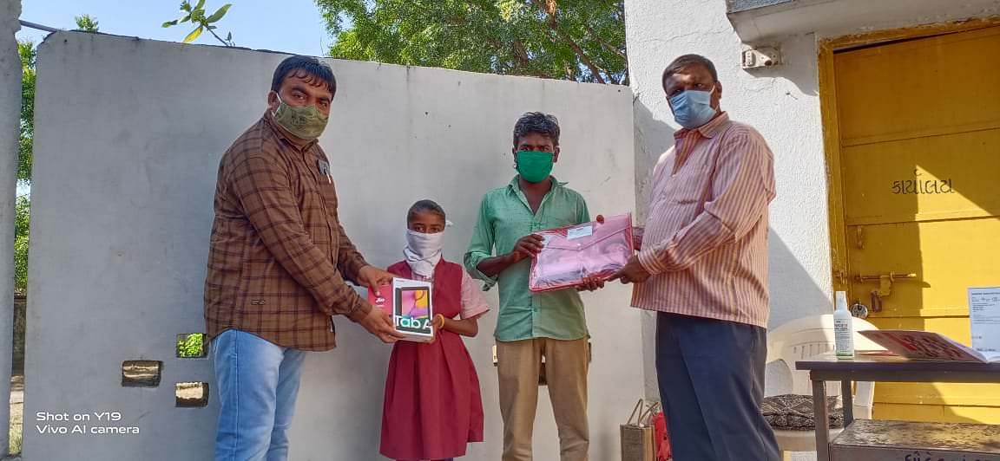

I reccently applied for the Hamdan award, so I can already tell you that I have participated in a bunch of extra-curricular activities
It was my honour to be a Prefect for Nile house in the Academic Year 2019-20. I learned many things (including how to quieten people during assemblies) and it was a great experience.
I can run fast and to prove that, I have a gold medal for 100m in 5th grade. I participated in Asset's Talent Search where I was one of few to qualify for the camps.
This is academic related, but it's something that I'm proud of. I've been an outstanding achiever for the past 3 years and am hoping to keep the streak up.
I'm an active member of EEG (Emirates Environment Group) which is a group based in Dubai that tries to increase awareness about the importance of nature through numerous initiatives. Spread across last year (2020), I contributed 1000 kilograms of paper and 60 toners and ink cartridges for recycling. As a 'reward' for contributing, I got to plant 3 trees in Ras Al Khaimah at a bee-reserve.
You might remeber the Toastmasters club I mentioned earlier (in the 'What I Like Doing' article), it also has leadership positions like President, Vice President Education, Vice President Membership, Secretary and SAA. I have been the Vice President Education last year. The VPE has to take care of education aspect of the club, by bringing in distinguished speakers for education sessions, introducing fun programs, giving incentives to take up harder roles, etc. Just recently in the beginning of January, I was elected as the new President of the Rising Stars Gavel Club.
If we come to the topic of voluntary works, I've participated in the Dubai Cares Walk for Education and donated to World Food Program (which got the Nobel Peace Prize last year)
Now, to round up, I'd like to say that due to this world-wide pandemic, a lot of children (around 1.3 billion) don't have access to education anymore. The reasons could be lack of electronic devices to attend online classes, or even poverty. Only 8% of Indian students have the resources it takes to commit to e-learning. An overwhelming majority of the under-resourced students belong to the low-income families of rural India. They cannot afford to own smartphones, let alone subscribe to internet services. I come from a village, and I really don't want anyone to be missing out on something as crucial as education. These same children are going to be the future of the world. So, I started a fundraiser on Milaap, to be able to get funds for buying mobile devices and internet service for rural children. We managed to reach Rs.32,655 with which we bought 2 Samsung tablets, a Samsung mobile, and 3 months of data to 11 students and 32 stationery kits to a school 100km north of Ahmedabad.
